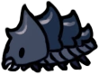
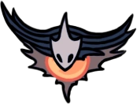
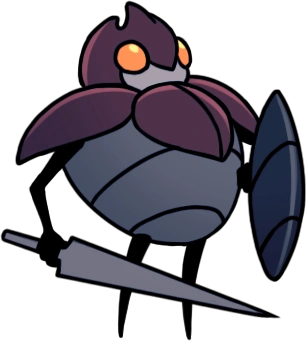

Repos Éternel
Une région de réseau de cavernes remplies de pierres tombales situées au-dessus de la Cité des Larmes.
Carte
Lore
La région du Repos Éternel était un lieu sacré où les insectes se réunissaient pour mener des rituels à la mémoire des morts. La Tribu des Papillons de Nuit était gardienne des tombes, fermant finalement la porte de la Clairière des Esprits et interdisant son ouverture. Un sanctuaire en l'honneur des Rêveurs a été construit après qu'ils soient tombés dans un sommeil éternel. Lorsque l'Infection est revenue, les insectes ont cessés de se rendre sur ces terres. La Voyante a fini par être la dernière survivante de sa tribu. Elle entretient les tombes et guide l'utilisateur de l'Aiguillon des Rêves.
Connexions
Le Repos Éternel est relié à ces zones :
Ennemis
-
Crawlid
Un charognard timide. Arpente les cavernes à la recherche de nourriture. Triste et pitoyable. Mérite à peine d’être tué.
-
Tiktik

Une créature se servant de ses petites griffes acérées pour grimper le long des murs et sur les toits. Passe son temps à arpenter les routes et les cavernes proches de la surface de ce royaume. Si vous êtes patient, il vous suffit d’attendre qu’elles viennent à vous pour les tuer.
-
Mouche Vengeresse

Un prédateur volant. Poursuis ses proies sans relâche. Ces féroces petits chasseurs pourchasseront même les créatures qui font plusieurs fois leur taille. Admirable! Cependant, j’en ai dévoré des centaines sans avoir fait le moindre effort, car ce sont des créatures très faibles.
-
Bluggsac

Une créature calme, mais putride. Elle porte des oeufs rances dans ses intestins. Ces créatures se repèrent facilement si vous avez un bon sens de l'odorat. Si vous trouvez l'un de ses oeufs, je vous conseille vivement de ne pas les manger.
-
Belfly
Une créature possédant de fines ailes qui dissimulent un ventre très instable. Elles sonneront leur propre vie pour protéger leur territoire. Une créature coléreuse sans égard pour sa propre vie. Une créature qui ne connait pas la peur... peut-on vraiment l'appeler "proie" ?
-
Carcasse Enterrée
Une carapace vide momifiée et déformée. Enragée par l’infection. A l’intérieur de ce corps sans vie se trouve une lumière brillante qui peut percer n’importe quelle obscurité. Une fois, j’ai regardé cette lumière et j’ai vu… quelque chose à l’intérieur qui brillait aussi. Quelque chose de terrible.
-
Sentinelle Vide Armée
La carapace vide d'une Grande sentinelle, qui appartenait à l'élite des gardes de la ville. Manie un estraguillon et un bouclier. Ses attaques puissantes peuvent causer de lourds dégâts. C'est une chose extrênement rare dans Hallownest, de croiser le chemin d'un créature, pouvant constituer une menace. Observez-les attentivemen, car elles peuvent attaquer rapidement avec des attaques dévastatrices.
-
Sentinelle Ailée

Une sentinelle ailée d’Hallownest. Patrouille dans les hauteurs d’une caverne immense à partir de laquelle la ville a été construite. Virevoltent dans les airs en restant hors de portée, jusqu’à ce qu’elle repère un point faible dans la défense de l’ennemi. C’est à ce moment qu’elles fondent sur l’ennemi pour porter un coup décisif. Si vous êtes assez confiant dans vos aptitudes de combat, attendez qu’elles viennent à vous pour contre-attaquer.
-
Grimm Despote

Esprit puissant et dévoué de la Troupe de Grimm. Dans le cadre du Rituel, il rassemble des flammes écarlates avec sa torche. Il abandonnera la flamme une fois vaincu. Une étincelle de lumière rouge d'un rêve le plus sombre. Des cauchemars écarlates brillants et sauvages. Les visions danse et les femmes parlent. Brûlez le père, nourrissez l'enfant
Boss de la Zone
Xero

Xero est l'un des Guerrier des Rêves. C'était un guerrier d'Hallownest qui croyait que la force lui permettrait toujours un avenir radieux. Quand son esprit fut infecté, il espérait lutter contre la peste avec violence. Poussé par le même espoir, il se retourna contre le Roi Pâle, pour lequel il fut exécuté. Xero a été enterré au Repos Éternel, sa tombe est un rappel à tous ceux qui voudraient trahir le roi. Lorsque son fantôme s'est réveillé, il ne pouvait toujours pas voir le tort de ses actes et croyait au contraire que sa disparition était le résultat d'un destin condamné.
Évènements
- Obtention de l'aiguillon des rêves
- Obtention du Journal du Chasseur
- Obtention d'un morceau d'âme
- Obtention d'un morceau de masque
- Accès au Tramway
- Accès au Lac Bleu
- Station Coléoptère : Station du Repos Éternel
- Rencontre des Rêveurs
- Rencontre de la Voyante
- Rencontre l'Endeuillée Grise
- Rencontre de Quirrel
- Rencontre de Tiso